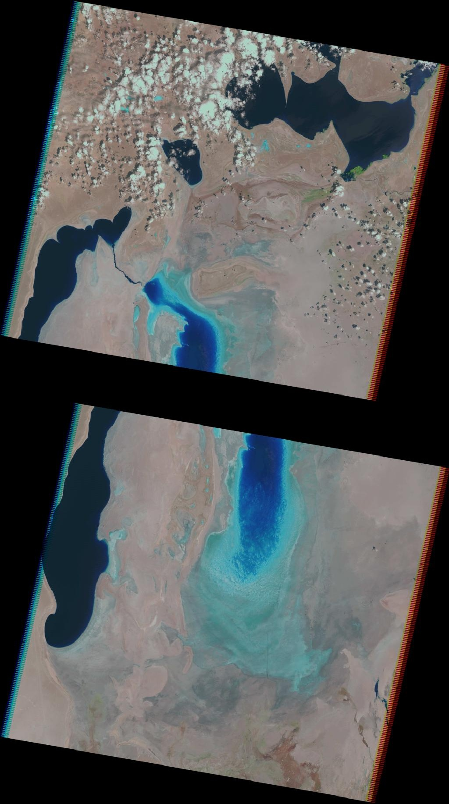
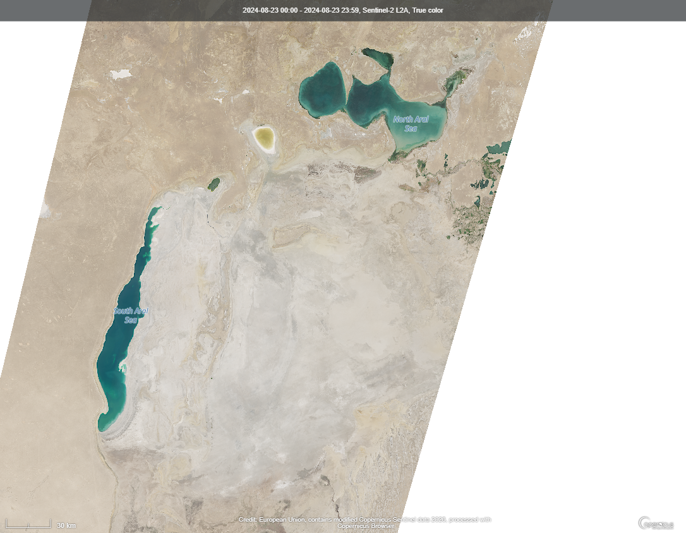

Oggi & Futuro
C'è una buona notizia, e molte cattive. Ecco com'è il Mar d'Aral nel 2024.
La Diga Kokaral
Nel 2005, con il finanziamento della Banca Mondiale, il Kazakhstan ha costruito la Diga Kokaral (o Berg Strait Dam). Lunga 13 km, separa fisicamente il Piccolo Aral (nord) dal Grande Aral (sud), permettendo all'acqua del fiume Syr Darya di accumularsi nel bacino settentrionale senza disperdersi nel sud.
Risultati del Piccolo Aral (2005–2024)


Immagini satellitari Landsat 5 (2009) e Sentinel-2 (2024)
⚠️ Prospettive: Il Grande Aral Sud
Senza un intervento radicale sui fiumi Amu Darya e Syr Darya (che richiederebbe una riduzione massiccia dell'irrigazione agricola in Uzbekistan e Turkmenistan) il Grande Aral Sud scomparirà completamente entro pochi decenni.
Le cinque nazioni che si dividono i bacini idrografici dell'Asia Centrale (Kazakistan, Uzbekistan, Turkmenistan, Kirghizistan, Tagikistan) non hanno mai raggiunto un accordo efficace sulla gestione condivisa dell'acqua. Il cambiamento climatico aggrava ulteriormente la situazione, riducendo i ghiacciai che alimentano i fiumi montani.
La storia del Mar d'Aral è oggi studiata come caso emblematico di come le decisioni politiche e agricole possano causare disastri ambientali irreversibili su scala regionale.